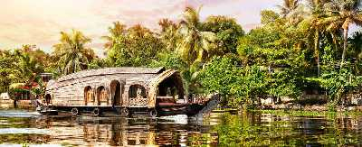
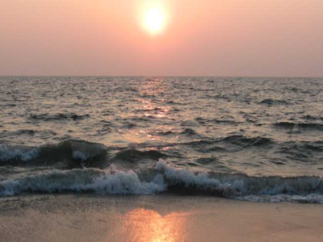
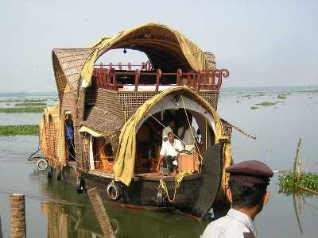
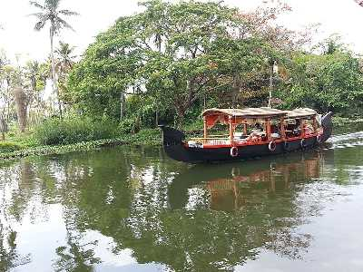

Houseboats
Popularly known as the Venice of the east, Alleppey or Allapuzha is famous for its serene backwaters and their exceptionally scenic setting. Cruising on houseboats in Alleppey is the latest and probably the best addition to the list of ways you can enjoy the mesmerizing natural beauty of this quaint little town. Alleppey is gifted with a unique crisscrossing network of canals that runs throughout the town which allows you to access and explore the entire area while you're relaxing on your houseboat.
Alappuzha Beach
The Alappuzha beach, also known as the Alleppey Beach, is famous for local getaways, its intrinsic beauty and a 150 years old pier which stretches into the sea. Relaxing under the palm groves and picnicking beside the beach are fantastic options available to those visiting the beach. Alleppey Beach is a host to many festivals like Sand Art festival and Alappuzha Beach Festival. In addition to the pristine beauty of Alleppey Beach, some exciting activities and attractions are present in and around this destination. Vijaya Beach Park has amusement amenities which acts as a plus point for the people visiting the beach. The Nehru Trophy Boat Race which takes place every year in August gives this beach another reason to become the most famous attraction in Kerala.
Kumarakom Bird Sanctuary
The Kumarakom Bird Sanctuary is spread over a total area of over 14 acres on the southern bank of the Kavanar River and is managed by Kerala Tourism Development Corporation. The sanctuary initially developed in a rubber plantation, and was looked after by an Englishman and known as the Baker's Estate. While neighbouring areas such as Poothanpandi Kayal and Pathirmanal are also excellent locations for spotting some rare and exquisite birds, this paradise on Earth is home to local birds like owls, cuckoos, waterfowls and herons; as well as migratory birds like the Siberian Crane. Other birds are also spotted here during their respective migratory seasons, some of which come from the Himalayas, while others flock from Siberia.
Vembanad Lake

Vembanad Lake is a lagoon located in the district of Alleppey in the South-Indian state of Kerala. This expansive lake/ lagoon is longest lake in the country and the largest Lake in Kerala, accessible from Kottayam, Kuttanad and Kochi. Vembanad Lake for its tranquil backwaters amidst mesmerising natural surroundings which backwater tourism what it is today. Vembanad Lake is known by different names in different regions of Kerala. It is called the Kochi Lake in Kochi, the Punnamada Lake in Kuttanad and as Vembanad in Kottayam. Locals also call it Vembanad Kol or Vembanad Kayal. One may go boating in the beautiful lagoon and explore the islands lined with lush green coconut trees. A houseboat stay is another way to explore the backwaters.
Nehru Trophy Boat Race

One of the most exciting events to be held in Lake in Alleppey is the Nehru Trophy Boat Race, which is a yearly competitive boating event held on the second Saturday of every August, during the Onam festival. The most popular event is the Snake Boat Race, which is a thrilling event to watch as well as participate in. 100-120 feet long canoe-like boats make serpentine movements through the water, thereby popularising the name. Other categories of boats which participate in various events of the race are Churulan Vallam, Iruttukuthy Vallam, Odi Vallam, Veppu Vallam (Vaipu Vallam), Vadakkanody Vallam and Kochu Vallam. Supposedly when Prime Minister Jawaharlal Nehru came to see the event, he got so involved in the competition that he jumped in one of the boats which later won the race.
Punnamada Lake
Punnamada Lake is an extension of Vembanad Lake in Alleppey. The lake is popular for hosting the very famous boat race called Nehru Trophy boat race. The race is held during the renowned Onam festival and attracts a lot of tourists from worldwide.